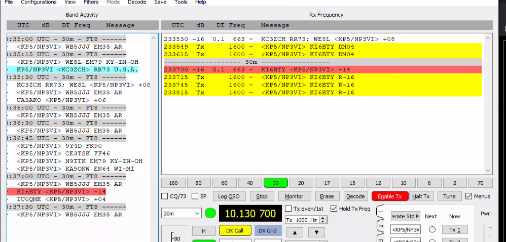

<!-- MHonArc v2.6.19+ -->
<!--X-Subject: Re: [NCDXC Chat] KP5 discussion topic -->
<!--X-From-R13: "Egrir Xbarf" &#60;a6fwNrneguyvax.arg> -->
<!--X-Date: Sat, 24 Jan 2026 18:28:05 &#45;0600 -->
<!--X-Message-Id: 001a01dc8d91$5b55db80$12019280$@earthlink.net -->
<!--X-Content-Type: multipart/related -->
<!--X-Reference: CAOJjquj8OatSi63fR9VTVA6vngxrZ8CpG8qJoudDMTu5bZ=LyQ@mail.gmail.com -->
<!--X-Reference: 28317029&#45;232B&#45;4649&#45;8E26&#45;2FDE47049B25@comcast.net -->
<!--X-Reference: 3ErrhyBT7dEP&#45;VzmKgKbaT1KkHUowGtRgWZTxoyN7NQQWEo95tdLhbTmbmek4JbojEiDz34G3DY5AgKc5BRhauXIbtGZ8qQcQDdeJPh1tJw=@pm.me -->
<!--X-Derived: png7QaGAYtxv_.png -->
<!--X-Derived: png4ubEzuREmz.png -->
<!--X-Head-End-->
<!DOCTYPE HTML PUBLIC "-//W3C//DTD HTML 4.01 Transitional//EN"
        "http://www.w3.org/TR/html4/loose.dtd">
<html>
<head>
<title>Re: [NCDXC Chat] KP5 discussion topic</title>
<link rev="made" href="mailto:n6sj@earthlink.net">
</head>
<body>
<!--X-Body-Begin-->
<!--X-User-Header-->
<!--X-User-Header-End-->
<!--X-TopPNI-->
<hr>
[<a href="msg41771.html">Date Prev</a>][<a href="msg41773.html">Date Next</a>][<a href="msg41769.html">Thread Prev</a>][<a href="msg41774.html">Thread Next</a>][<a href="maillist.html#41772">Date Index</a>][<a href="threads.html#41772">Thread Index</a>]
<!--X-TopPNI-End-->
<!--X-MsgBody-->
<!--X-Subject-Header-Begin-->
<h1>Re: [NCDXC Chat] KP5 discussion topic</h1>
<hr>
<!--X-Subject-Header-End-->
<!--X-Head-of-Message-->
<ul>
<li><em>To</em>: &quot;'Ryan Huggins'&quot; &lt;<a href="mailto:KI6BTY%40pm.me">KI6BTY@pm.me</a>&gt;,	&quot;'Bruce H. Bern'&quot; &lt;<a href="mailto:eagleyemd%40comcast.net">eagleyemd@comcast.net</a>&gt;</li>
<li><em>Subject</em>: Re: [NCDXC Chat] KP5 discussion topic</li>
<li><em>From</em>: &quot;Steve Jones&quot; &lt;<a href="mailto:n6sj%40earthlink.net">n6sj@earthlink.net</a>&gt;</li>
<li><em>Date</em>: Sat, 24 Jan 2026 16:27:07 -0800</li>
<li><em>Arc-authentication-results</em>: i=1; earthlink-vadesecure.net; auth=pass smtp.auth=<a href="mailto:n6sj%40earthlink.net">n6sj@earthlink.net</a> smtp.mailfrom=<a href="mailto:n6sj%40earthlink.net">n6sj@earthlink.net</a>;</li>
<li><em>Arc-message-signature</em>: i=1; a=rsa-sha256; d=earthlink-vadesecure.net; s=arc-202410-rsa2048; t=1769300838; c=relaxed/relaxed; h=from:reply-to:subject:date:to:cc:resent-date:resent-from:resent-to:resent-cc:in-reply-to:references:list-id:list-help:list-unsubscribe:list-unsubscribe-post:list-subscribe:list-post:list-owner:list-archive; bh=BqJ6aF9t1gdxd8Sk9LR/LhCTIO9w389012U2mSXnsm4=; b=2yeeYv74IlZzkZtGaQkB8lYted1MsNvr4VGDFr9cAP20NVJiSKQWKCOKuxrJvcehMUV8+E7crbZb8VRuSCh3rzGrhsUhVESMwtOj1+tvuI0TnQVFDYxXzfbhPIdNk21pAqfLrwGlasLo5uC63+zW1nyHnAOT5vfia9fvNpB37eusLC9LwZijOXMgnczVetQX28jJTwT9zhKxNdmLDE1cVegXVNV9rSNYFLJrzTCsyXlxDAaaotyLo/rx3I+TRLn7gPmH882IRJtVey6MBZQ58XJO70T8GV6PvysMgFq/iOQ+t0CidaKmTiSkuII0y/9w/KAACZoqIntsSVzY/tkACA==</li>
<li><em>Arc-seal</em>: i=1; a=rsa-sha256; d=earthlink-vadesecure.net; s=arc-202410-rsa2048; t=1769300838; cv=none; b=InoL/jGc69X/Bsp+4IIP3aADdXcllI7k+tQh3geoeEpKaK+XjzwB2TbXAqlDiTjHJoKkgJOj8hGWSTQZl2kePi4bIYTODpGQsoWkc184/Q7wC4y8eSivYhQZkDW6KPD/IFwRBZhNB+u7heguP2nwlR9BdKHeseZ/vwJX7kKZdmKUK01bP0I6Q+bXeF5VMvbUHJXr/M4/eTAvBLFIDvUW7Tq2G1WRMCnvEJgXzwyfFjBkLllNdSiAVPsMbm1C/UY+cfHLnyzShW6HJN0WCXHZLJyvSHEXsOY0WuhG8vQGY3EcmDVAEtDg5ELHASV1CpBkPd7U1KiZlwquaskC0FDdeQ==</li>
<li><em>Authentication-results</em>: earthlink-vadesecure.net; auth=pass smtp.auth=<a href="mailto:n6sj%40earthlink.net">n6sj@earthlink.net</a> smtp.mailfrom=<a href="mailto:n6sj%40earthlink.net">n6sj@earthlink.net</a>;</li>
<li><em>Cc</em>: &lt;<a href="mailto:chat%40ncdxc.org">chat@ncdxc.org</a>&gt;</li>
<li><em>Dkim-signature</em>: v=1; a=rsa-sha256; bh=BqJ6aF9t1gdxd8Sk9LR/LhCTIO9w389012U2mS Xnsm4=; c=relaxed/relaxed; d=earthlink.net; h=from:reply-to:subject: date:to:cc:resent-date:resent-from:resent-to:resent-cc:in-reply-to: references:list-id:list-help:list-unsubscribe:list-unsubscribe-post: list-subscribe:list-post:list-owner:list-archive; q=dns/txt; s=dk12062016; t=1769300838; x=1769905638; b=ra46Iwok9dHNgFWzjOzCUMu8mqm Wy7zS/xu+qo5O7Zcg5zpaz9Sn2pzlDYEA8oOqkyU7YZApR77ZJs9du8tmpqebJcSuBzwD3A MP37rA1Z1D+VuLA9WZ1daz8ZLf/ewPJ865YcXd9itWqWhJboPVlE1xwekh7Kk3H+MZwVZLM G70HgP09WC8+uhpMsxxcVMglY0o2Bu1XdDaLrRDUDKF+GNL6KthSsp8aPfILWoSc/P2IMmy x42rNkZyb8VhQWQchmteDfAoqiIw05jHoyVfFtxnSOC1qzFDr9bwgLBLGgAG6MXHTy1qULQ P4DO7HT+Wf+QBFXI2ew2OeVo2mFcWwQ==</li>
<li><em>In-reply-to</em>:  &lt;3ErrhyBT7dEP-VzmKgKbaT1KkHUowGtRgWZTxoyN7NQQWEo95tdLhbTmbmek4JbojEiDz34G3DY5AgKc5BRhauXIbtGZ8qQcQDdeJPh1tJw=@pm.me&gt;</li>
<li><em>List-archive</em>: &lt;<a href="http://mail.ncdxc.org/mailman/private/chat_ncdxc.org/">http://mail.ncdxc.org/mailman/private/chat_ncdxc.org/</a>&gt;</li>
<li><em>List-help</em>: &lt;<a href="mailto:chat-request@ncdxc.org?subject=help">mailto:chat-request@ncdxc.org?subject=help</a>&gt;</li>
<li><em>List-id</em>: NCDXC Discussion List &lt;chat.ncdxc.org&gt;</li>
<li><em>List-post</em>: &lt;<a href="mailto:chat@ncdxc.org">mailto:chat@ncdxc.org</a>&gt;</li>
<li><em>List-subscribe</em>: &lt;<a href="http://mail.ncdxc.org/mailman/listinfo/chat_ncdxc.org">http://mail.ncdxc.org/mailman/listinfo/chat_ncdxc.org</a>&gt;, &lt;<a href="mailto:chat-request@ncdxc.org?subject=subscribe">mailto:chat-request@ncdxc.org?subject=subscribe</a>&gt;</li>
<li><em>List-unsubscribe</em>: &lt;<a href="http://mail.ncdxc.org/mailman/options/chat_ncdxc.org">http://mail.ncdxc.org/mailman/options/chat_ncdxc.org</a>&gt;, &lt;<a href="mailto:chat-request@ncdxc.org?subject=unsubscribe">mailto:chat-request@ncdxc.org?subject=unsubscribe</a>&gt;</li>
<li><em>References</em>:  &lt;CAOJjquj8OatSi63fR9VTVA6vngxrZ8CpG8qJoudDMTu5bZ=LyQ@mail.gmail.com&gt; &lt;<a href="msg41761.html">28317029-232B-4649-8E26-2FDE47049B25@comcast.net</a>&gt;  &lt;3ErrhyBT7dEP-VzmKgKbaT1KkHUowGtRgWZTxoyN7NQQWEo95tdLhbTmbmek4JbojEiDz34G3DY5AgKc5BRhauXIbtGZ8qQcQDdeJPh1tJw=@pm.me&gt;</li>
<li><em>Thread-index</em>: AQHAjkGnKxW++ehNPSQl5+XBPLNtlgJyW1rnAg1VzkO1dggSkA==</li>
</ul>
<!--X-Head-of-Message-End-->
<!--X-Head-Body-Sep-Begin-->
<hr>
<!--X-Head-Body-Sep-End-->
<!--X-Body-of-Message-->
<table width="100%"><tr><td style="a:link { color: blue } a:visited { color: purple } "><div class=WordSection1><p class=MsoNormal><span style='font-size:11.0pt'>Great work, Ryan.&#xA0; So it was just poor propagation that was thwarting you?&#xA0; No equipment/softare issues?<o:p></o:p></span></p><p class=MsoNormal><span style='font-size:11.0pt'>73,<o:p></o:p></span></p><p class=MsoNormal><span style='font-size:11.0pt'>Steve<o:p></o:p></span></p><p class=MsoNormal><span style='font-size:11.0pt'>N6SJ<o:p></o:p></span></p><p class=MsoNormal><span style='font-size:11.0pt'><o:p>&nbsp;</o:p></span></p><p class=MsoNormal><span style='font-size:11.0pt'><o:p>&nbsp;</o:p></span></p><p class=MsoNormal><span style='font-size:11.0pt'><o:p>&nbsp;</o:p></span></p><p class=MsoNormal><span style='font-size:11.0pt'><o:p>&nbsp;</o:p></span></p><div style='border:none;border-top:solid #E1E1E1 1.0pt;padding:3.0pt 0in 0in 0in'><p class=MsoNormal><b><span style='font-size:11.0pt;font-family:"Calibri",sans-serif'>From:</span></b><span style='font-size:11.0pt;font-family:"Calibri",sans-serif'> Chat &lt;chat-bounces@ncdxc.org&gt; <b>On Behalf Of </b>Ryan Huggins via Chat<br><b>Sent:</b> Saturday, January 24, 2026 3:43 PM<br><b>To:</b> Bruce H. Bern &lt;eagleyemd@comcast.net&gt;<br><b>Cc:</b> chat@ncdxc.org<br><b>Subject:</b> Re: [NCDXC Chat] KP5 discussion topic<o:p></o:p></span></p></div><p class=MsoNormal><o:p>&nbsp;</o:p></p><div><p class=MsoNormal><span style='font-size:10.5pt;font-family:"Arial",sans-serif'>The radio God have finally smiled upon me.&nbsp; I have made the QSO with KP5/NP3VI!!!&nbsp; I managed to get them right as the first hamalert spot for 30m went out, heard them (did have to tune down a smidge because of a loud station transmitting on the wrong time slot), but they heard me and logged me!&nbsp; What a way to finish up a weekend before a trip!<o:p></o:p></span></p></div><div><p class=MsoNormal><span style='font-size:10.5pt;font-family:"Arial",sans-serif'><o:p>&nbsp;</o:p></span></p></div><div><p class=MsoNormal><span style='font-size:10.5pt;font-family:"Arial",sans-serif'></span><span style='font-size:10.5pt;font-family:"Arial",sans-serif'><o:p></o:p></span></p></div><div><p class=MsoNormal><span style='font-size:10.5pt;font-family:"Arial",sans-serif'><o:p>&nbsp;</o:p></span></p></div><div><p class=MsoNormal><span style='font-size:10.5pt;font-family:"Arial",sans-serif'></span><span style='font-size:10.5pt;font-family:"Arial",sans-serif'><o:p></o:p></span></p></div><div><div><div><p class=MsoNormal><span style='font-size:10.5pt;font-family:"Arial",sans-serif;color:black'><o:p>&nbsp;</o:p></span></p></div><div><p class=MsoNormal><span style='font-size:10.5pt;font-family:"Arial",sans-serif;color:black'>-73<o:p></o:p></span></p></div><div><p class=MsoNormal><span style='font-size:10.5pt;font-family:"Arial",sans-serif;color:black'>Ryan, KI6BTY<o:p></o:p></span></p></div></div></div><div><p class=MsoNormal><span style='font-size:10.5pt;font-family:"Arial",sans-serif'><o:p>&nbsp;</o:p></span></p></div><div><p class=MsoNormal>On Friday, January 23rd, 2026 at 2:16 PM, Bruce H. Bern &lt;<a rel="nofollow" href="mailto:eagleyemd@comcast.net">eagleyemd@comcast.net</a>&gt; wrote:<br><br><o:p></o:p></p><blockquote style='margin-top:5.0pt;margin-bottom:5.0pt'><p class=MsoNormal>And I&#x2019;d like to second Paul&#x2019;s invitation. This is the first time Desecheo has been on the air since 2009. Their low-powered operation with no-gain antennas is necessitated by the island&#x2019;s status and &nbsp;restrictive operating permit.&nbsp;<o:p></o:p></p><div><p class=MsoNormal>KP5 is in high demand worldwide, and it&#x2019;s been tough to work them without a gain antenna and an amp.&nbsp;<o:p></o:p></p></div><div><p class=MsoNormal>I live a bit over a mile from CA92 near the College of San Mateo. I&#x2019;m happy to open my station to any NCDXC members who have failed to snag their ATNO.&nbsp;<o:p></o:p></p></div><div><p class=MsoNormal>73, Bruce K3NQ&nbsp;<o:p></o:p></p></div><div><p class=MsoNormal><o:p>&nbsp;</o:p></p><div><p class=MsoNormal>Sent from my iPhone<o:p></o:p></p></div><div><p class=MsoNormal><br><br><o:p></o:p></p><blockquote style='margin-top:5.0pt;margin-bottom:5.0pt'><p class=MsoNormal style='margin-bottom:12.0pt'>On Jan 23, 2026, at 12:11, Paul N6PSE via Chat &lt;<a rel="nofollow" href="mailto:chat@ncdxc.org">chat@ncdxc.org</a>&gt; wrote:<o:p></o:p></p></blockquote></div><blockquote style='margin-top:5.0pt;margin-bottom:5.0pt'><div><p class=MsoNormal><span style='font-family:"Tahoma",sans-serif'>&#xFEFF;</span><o:p></o:p></p><div><p class=MsoNormal>Hey Ryan, Lots of good tips and advice going your way.&nbsp;<o:p></o:p></p><div><p class=MsoNormal><o:p>&nbsp;</o:p></p></div><div><p class=MsoNormal>Also, some great tools available.&nbsp;<o:p></o:p></p></div><div><p class=MsoNormal>There is the KP5 Livestream at:&nbsp;<a rel="nofollow" href="https://clublog.org/livestream/KP5/NP3VI" target="_blank">https://clublog.org/livestream/KP5/NP3VI</a><o:p></o:p></p></div><div><p class=MsoNormal>In addition, Hamspots.net is a great free resource where you can put a call in and find out where he was last decoded. This works great for FT modes and CW.&nbsp;<o:p></o:p></p></div><div><p class=MsoNormal><o:p>&nbsp;</o:p></p></div><div><p class=MsoNormal>Lastly, KP5 is super rare, so if you find that you cannot work him from home with your dipole, please consider visiting a local friend's station to work him from there.&nbsp;<o:p></o:p></p></div><div><p class=MsoNormal><o:p>&nbsp;</o:p></p></div><div><p class=MsoNormal>I always welcome visitors to my station in San Jose. There should be no shame/stigma attached to using a more potent station to work this ultra rare DX.&nbsp;<o:p></o:p></p></div><div><p class=MsoNormal><o:p>&nbsp;</o:p></p></div><div><p class=MsoNormal>Best wishes,&nbsp;<o:p></o:p></p></div><div><p class=MsoNormal><o:p>&nbsp;</o:p></p></div><div><p class=MsoNormal>Paul N6PSE<o:p></o:p></p></div></div><p class=MsoNormal><o:p>&nbsp;</o:p></p><div><div><p class=MsoNormal>On Thu, Jan 22, 2026 at 3:40<span style='font-family:"Arial",sans-serif'>&#x202F;</span>PM Ryan Huggins via Chat &lt;<a rel="nofollow" href="mailto:chat@ncdxc.org">chat@ncdxc.org</a>&gt; wrote:<o:p></o:p></p></div><blockquote style='border:none;border-left:solid #CCCCCC 1.0pt;padding:0in 0in 0in 6.0pt;margin-left:4.8pt;margin-right:0in'><div><p class=MsoNormal><span style='font-size:10.5pt;font-family:"Arial",sans-serif'>Thank you all!&nbsp; I put the call in the wanted box and tuned 500khz down and I'm able to pick up a decode now!&nbsp; They seem to be working some JA stations at the moment.<o:p></o:p></span></p></div><div><p class=MsoNormal><span style='font-size:10.5pt;font-family:"Arial",sans-serif'><o:p>&nbsp;</o:p></span></p></div><div><p class=MsoNormal><span style='font-size:10.5pt;font-family:"Arial",sans-serif'>I've got my RF Kit 2kS fired up now to make sure I get heard.<o:p></o:p></span></p></div><div><p class=MsoNormal><span style='font-size:10.5pt;font-family:"Arial",sans-serif'><o:p>&nbsp;</o:p></span></p></div><div><p class=MsoNormal><span style='font-size:10.5pt;font-family:"Arial",sans-serif'>Fingers, toes, and eyes crossed for a QSO!<o:p></o:p></span></p></div><div><p class=MsoNormal><span style='font-size:10.5pt;font-family:"Arial",sans-serif'><o:p>&nbsp;</o:p></span></p></div><div><div><div><p class=MsoNormal><span style='font-size:10.5pt;font-family:"Arial",sans-serif;color:black'><o:p>&nbsp;</o:p></span></p></div><div><p class=MsoNormal><span style='font-size:10.5pt;font-family:"Arial",sans-serif;color:black'>-73<o:p></o:p></span></p></div><div><p class=MsoNormal><span style='font-size:10.5pt;font-family:"Arial",sans-serif;color:black'>Ryan, KI6BTY<o:p></o:p></span></p></div></div></div><div><p class=MsoNormal><span style='font-size:10.5pt;font-family:"Arial",sans-serif'><o:p>&nbsp;</o:p></span></p></div><div><p class=MsoNormal>On Thursday, January 22nd, 2026 at 3:29 PM, Rick Bates, nk7i via Chat &lt;<a rel="nofollow" href="mailto:chat@ncdxc.org" target="_blank">chat@ncdxc.org</a>&gt; wrote:<br><br><o:p></o:p></p><blockquote style='margin-top:5.0pt;margin-bottom:5.0pt'><p>What you <i>may</i> see on the spotting list is: 21.09297<o:p></o:p></p><p>Which means they're on 21.090, using a <i>tone</i> of 297 (the spot is accurate, once you add the two values).<o:p></o:p></p><p>Again, some rig brands filter &lt; 300, so you may have to adjust your VFO down by 100 Hz to hear them).<o:p></o:p></p><p>73 es gl,<br>Rick nk7i<o:p></o:p></p><p><o:p>&nbsp;</o:p></p><div><p class=MsoNormal>On 1/22/2026 3:23 PM, Robert Kincaid via Chat wrote:<o:p></o:p></p></div><blockquote style='margin-top:5.0pt;margin-bottom:5.0pt'><p class=MsoNormal>They seem to be on 24.922 not 21.090.<o:p></o:p></p><div><p class=MsoNormal><br><br><o:p></o:p></p><blockquote style='margin-top:5.0pt;margin-bottom:5.0pt'><div><p class=MsoNormal>On Jan 22, 2026, at 15:12, Bruce H. Bern via Chat <a rel="nofollow" href="mailto:chat@ncdxc.org" target="_blank">&lt;chat@ncdxc.org&gt;</a> wrote:<o:p></o:p></p></div><p class=MsoNormal><o:p>&nbsp;</o:p></p><div><div><p class=MsoNormal>First: they just got spotted at 21090. Go get &#x2018;em, and then return to your email client. <o:p></o:p></p><div><p class=MsoNormal>Ryan, they&#x2019;re running MSHV with multiple streams starting in the 200s and spaced 60 Hz apart. If you&#x2019;re using a legacy transceiver with a passband tailored for SSB, your FT8 receive performance may improve if you set you base frequency 500 Hz below theirs. <o:p></o:p></p></div><div><p class=MsoNormal>That is if they&#x2019;re at 21090, set your radio at 21089.5. That&#x2019;ll put their tones starting at a bit over 700, well within your SSB filter and audio passband, rather than in the 200 Hz range. Sometimes narrowing and centering your passband on their tones can help, but WSJT is remarkably noise resistant. <o:p></o:p></p></div><div><p class=MsoNormal>Most of us are using WSJT 3.0 improved plus. You do need processor power and memory to take advantage of its capabilities. It will pick out weaker signals than the older builds. <o:p></o:p></p></div><div><p class=MsoNormal>Don&#x2019;t use SF or FH&#x2026; just regular old WSJT. If you can&#x2019;t hear their low 60 Hz buzz and their basso profundo tones, you probably won&#x2019;t decode them. <o:p></o:p></p></div><div><p class=MsoNormal>GL es 73, Bruce<o:p></o:p></p></div><div><p class=MsoNormal><o:p>&nbsp;</o:p></p><div><p class=MsoNormal>Sent from my iPhone<o:p></o:p></p></div><div><p class=MsoNormal><br><br><o:p></o:p></p><blockquote style='margin-top:5.0pt;margin-bottom:5.0pt'><p class=MsoNormal style='margin-bottom:12.0pt'>On Jan 22, 2026, at 14:54, Rick Bates, nk7i via Chat <a rel="nofollow" href="mailto:chat@ncdxc.org" target="_blank">&lt;chat@ncdxc.org&gt;</a> wrote:<o:p></o:p></p></blockquote></div><blockquote style='margin-top:5.0pt;margin-bottom:5.0pt'><div><p class=MsoNormal><span style='font-family:"Tahoma",sans-serif'>&#xFEFF;</span> <o:p></o:p></p><p>Location, location, location; for ham radio too. Hills/mountains nearby will block low angle signals (even here in the north Rockies); which tend to be the first at the open and last at the close. By the time a high angle antenna hears them, EVERYONE hears them (it seems).<o:p></o:p></p><p>Big picture: lower your noise floor, increase antenna gain. Repeat. Repeat. Repeat.<o:p></o:p></p><p>Then be as LOUD AS you legally can... raw power helps (WHEN you hear them); you HAVE to break through the crowds to be heard, to be put in their buffer... even the big guns sometimes miss out (it'd be better if they paid better attention to prop AT the RADIO site instead of their shack chair to fill in their zone voids, a few of the ops... unwise choices).<o:p></o:p></p><p>They are using MSHV and NOT running f/h or SF modes but with the crowds involved, it MIGHT be beneficial to answer (when called) ON the tone they called you on (just to be out of (most of) the crowd.<o:p></o:p></p><p>Because they're QRP (anything &lt; legal band limit), this is good. If they limit to 3 streams MAX, that's better.<o:p></o:p></p><p>If your AGC is being swamped because someone isn't paying attention, center your 'shift' onto the DX tones (middle tone if &gt; 1); <br>narrow your 'bandwidth' control until you notch out the offender (at 5 streams, limit to 300 Hz; 1 stream 50 Hz).<o:p></o:p></p><p>This helps sometimes when the signal is puny. Sometimes.<o:p></o:p></p><p>It skews your report, so what? It's not the content of the report that matters, it's that both parties agree that each sent and received a report that allows a QSL. Are ALL CW DX always 599 599? Really? <span style='font-family:"Segoe UI Emoji",sans-serif'>&#128521;</span><o:p></o:p></p><p>They've done FT4 but those packets are much more fragile (no repeats in the same transmission) so they're more challenge (and wasting time since they have other zone and band mode slots left unsatisfied).<o:p></o:p></p><p>WSJT-X_improved works well here; worth looking into. All we need (as always) is prop and adequate signal/s. <span style='font-family:"Segoe UI Emoji",sans-serif'>&#128539;</span><o:p></o:p></p><p>GL,<br>Rick nk7i<o:p></o:p></p><p><o:p>&nbsp;</o:p></p><div><p class=MsoNormal>On 1/22/2026 2:12 PM, Robert Kincaid via Chat wrote:<o:p></o:p></p></div><blockquote style='margin-top:5.0pt;margin-bottom:5.0pt'><p class=MsoNormal>Ryan, <o:p></o:p></p><div><p class=MsoNormal><o:p>&nbsp;</o:p></p></div><div><p class=MsoNormal>You&#x2019;re not alone. I share your frustration. I only decoded them well once so far and then for just a few minutes before they went QRT. Like you I hear many calling stations but nothing from KP5 despite PSKReporter showing I&#x2019;m hearing and being heard by other nearby islands. I&#x2019;m on the coast in Half Moon Bay a bit south of SF and there is some geography in that direction that may be contributing to my woes in odd ways. However, Ilike you &#x2019;ve reached many Caribbean islands in the past.<o:p></o:p></p></div><div><p class=MsoNormal><o:p>&nbsp;</o:p></p></div><div><p class=MsoNormal>One of my pet peeves (not KP5&#x2019;s problem) are all the guys calling on the wrong cycle as it throws off any AGC while I&#x2019;m trying to pull in their weak (to me) signal. It&#x2019;s really annoying when someone is repeatedly calling on the wrong cycle at +10 until they time out in WSJT-X.<o:p></o:p></p></div><div><p class=MsoNormal><o:p>&nbsp;</o:p></p></div><div><p class=MsoNormal>It&#x2019;s also very frustrating when DX stations back down to only one or two streams so the signal perks up and then just about the the time they *might* call me back they switch to 6 streams and I get <span lang=EN>bupkis. I really appreciate the DXpeditions that segue at some point to doing straight FT8 or even FT4 for a while to give those of us with signal issues a chance.</span><o:p></o:p></p></div><div><p class=MsoNormal><o:p>&nbsp;</o:p></p></div><div><p class=MsoNormal>But there&#x2019;s always another ATNO out there somewhere *grin*. I did manage to snag South Shetland yesterday as a consolation prize.<o:p></o:p></p></div><div><p class=MsoNormal><o:p>&nbsp;</o:p></p></div><div><p class=MsoNormal>73 and GL,<o:p></o:p></p></div><div><p class=MsoNormal>Robert, AI6P<o:p></o:p></p></div><div><p class=MsoNormal><o:p>&nbsp;</o:p></p></div><div><p class=MsoNormal>PS I&#x2019;m running a similar setup<o:p></o:p></p></div><div><p class=MsoNormal>IC7300, 80-10 EFHW, WSJT-X Improved, MacOS<o:p></o:p></p></div><div><div><p class=MsoNormal><br><br><o:p></o:p></p><blockquote style='margin-top:5.0pt;margin-bottom:5.0pt'><div><p class=MsoNormal>On Jan 22, 2026, at 13:38, Ryan Huggins via Chat <a rel="nofollow" href="mailto:chat@ncdxc.org" target="_blank">&lt;chat@ncdxc.org&gt;</a> wrote:<o:p></o:p></p></div><p class=MsoNormal><o:p>&nbsp;</o:p></p><div><div><p class=MsoNormal><span style='font-size:10.5pt;font-family:"Arial",sans-serif'>I'm curious, what are you all operating to get the FT8 contacts? So far, I've been chasing their spots on the live stream, running in both normal and hound mode, even super hound a couple of times, and I have yet to decode a single bit of traffic from them. I'll hear 30-50 stations call them, but I never see any responses back, however I do hear something on the band in their time slot that sounds like FT8 traffic. I'm not sure if it's them or in the case of many of these frequencies being close to the normal FT8/4 frequencies if I'm just picking up normal signals a few k off.<o:p></o:p></span></p></div><div><p class=MsoNormal><span style='font-size:10.5pt;font-family:"Arial",sans-serif'><o:p>&nbsp;</o:p></span></p></div><div><p class=MsoNormal><span style='font-size:10.5pt;font-family:"Arial",sans-serif'>Software: WSJT Improved v3.0.0, running on Windows 10. <o:p></o:p></span></p></div><div><p class=MsoNormal><span style='font-size:10.5pt;font-family:"Arial",sans-serif'>Radio: FTDX101MP with gain turned up<o:p></o:p></span></p></div><div><p class=MsoNormal><span style='font-size:10.5pt;font-family:"Arial",sans-serif'>Antenna: ZS6BKW wire dipole pointed north/south (though I usually have no trouble getting the US VI/PR or other nearby entities).<o:p></o:p></span></p></div><div><p class=MsoNormal><span style='font-size:10.5pt;font-family:"Arial",sans-serif'><o:p>&nbsp;</o:p></span></p></div><div><p class=MsoNormal><span style='font-size:10.5pt;font-family:"Arial",sans-serif'>Thanks in advance,<o:p></o:p></span></p></div><div><p class=MsoNormal><span style='font-size:10.5pt;font-family:"Arial",sans-serif'>Ryan<o:p></o:p></span></p></div><div><div><div><p class=MsoNormal><span style='font-size:10.5pt;font-family:"Arial",sans-serif'><o:p>&nbsp;</o:p></span></p></div><div><p class=MsoNormal><span style='font-size:10.5pt;font-family:"Arial",sans-serif'>-73<o:p></o:p></span></p></div><div><p class=MsoNormal><span style='font-size:10.5pt;font-family:"Arial",sans-serif'>Ryan, KI6BTY<o:p></o:p></span></p></div></div></div><div><p class=MsoNormal><span style='font-size:10.5pt;font-family:"Arial",sans-serif'><o:p>&nbsp;</o:p></span></p></div><div><p class=MsoNormal>On Thursday, January 22nd, 2026 at 12:13 PM, Paul Booth via Chat <a rel="nofollow" href="mailto:chat@ncdxc.org" target="_blank">&lt;chat@ncdxc.org&gt;</a> wrote:<br><br><o:p></o:p></p><blockquote style='margin-top:5.0pt;margin-bottom:5.0pt'><div><div><p class=MsoNormal><span style='font-family:"Arial",sans-serif'>More power would be good but a lot can be accomplished with the right wire antenna(s). For example, Vlad, UA4WHX has used an antenna and 100w from 3B9 among other locations and did extremely well all around the world on a very modest station and during a worse part of the solar cycle. Multiple antennas of this type (on his QRZ page) may be required for different directions.<o:p></o:p></span></p></div><div><p class=MsoNormal><span style='font-family:"Arial",sans-serif'>Paul, W6IBU<o:p></o:p></span></p></div></div><div style='border:none;border-left:solid #AAAAAA 1.0pt;padding:0in 0in 0in 11.0pt;box-sizing:border-box'><p>-----Original Message-----<br>From: Rick Bates, nk7i via Chat <a rel="nofollow" href="mailto:chat@ncdxc.org" target="_blank">&lt;chat@ncdxc.org&gt;</a><br>Sent: Jan 22, 2026 12:02 PM<br>To: <a rel="nofollow" href="mailto:chat@ncdxc.org" target="_blank">&lt;chat@ncdxc.org&gt;</a><br>Subject: Re: [NCDXC Chat] KP5 discussion topic<o:p></o:p></p><p style='margin:0.1rem 0px'><span style='color:red'>Responses within.</span><o:p></o:p></p><div><p class=MsoNormal>On 1/22/2026 11:39 AM, Bruce Bern - K3NQ via Chat wrote:<o:p></o:p></p></div><blockquote style='margin-top:5.0pt;margin-bottom:5.0pt'><div><p class=MsoNormal><span style='font-family:"Calibri",sans-serif'>Within practical weight limitations, more PV panels and storage, along with a charge controller that allows operation of the radios while charging.</span><o:p></o:p></p></div></blockquote><p class=MsoNormal><span style='color:red'>Agree, having too much power source is rarely 'bad. Figure out worst case for 24/7 needs, double that (for starters).</span> <o:p></o:p></p><blockquote style='margin-top:5.0pt;margin-bottom:5.0pt'><div><p class=MsoNormal><span style='font-family:"Calibri",sans-serif'>Once again, within weight and power limitations, a modest solid-state amp of 300-500w. I was disappointed that during an epic 6m opening to PR they were running multistream with 100w to a wire: that&#x2019;s genuine QRP. There was an open path for W6, and if we could have heard KP5, we all could have worked him. It appeared that most of their 6m contacts were Texas and east, but on PSKR, I was being decoded by at least 4 stations in PR.</span><o:p></o:p></p></div></blockquote><p class=MsoNormal><span style='color:red'>Along with a LOT more hardware to make it viable if running &gt;1 station. Band filters at the least; even more power sourcing and still unlikely because of RF exposure to the wildlife (which would be treated at LEAST to the human exposure levels); forget about it during nesting, fledgling periods).</span> <o:p></o:p></p><blockquote style='margin-top:5.0pt;margin-bottom:5.0pt'><div><p class=MsoNormal><span style='font-family:"Calibri",sans-serif'>It&#x2019;s open to discussion, but I would like to have seen some SF operation. FT8 multistream has a real noise/bandwidth advantage, which is frequently offset beyond 2 streams by SF depending on noise conditions. </span><o:p></o:p></p></div></blockquote><p class=MsoNormal><span style='color:red'>SF comes at a <em><b><u><span style='font-family:"Aptos",sans-serif'>HIGH</span></u></b></em> cost where signals MUST be 9 dB louder over one stream, to be decoded (-16 SF vs -25 1 stream). Proven MANY times over. The potential for 10 stations at once, is RARELY achieved and the through rates aren't all that much better than running 3-4 streams. This leaves the pop gun stations out in the cold (can't hear), worse yet KP5 is running QRP (100 watts max) and aggravating that by (often) running 5 streams; so again those with no gain in their antennas can't hear them. Limit to 3 streams max, beyond that (with 100 watts) is just too little for zones beyond 1-1.5K miles. AND pick a base tone &gt;300 Hz, because some radio brands filter below that (so the user has to offset the VFO to compensate).</span> <o:p></o:p></p><blockquote style='margin-top:5.0pt;margin-bottom:5.0pt'><div><p class=MsoNormal><br><span style='font-family:"Calibri",sans-serif'>A light hexbeam would be a huge benefit for Asia, but would require a remote rotor, and once again, add weight and complexity.</span><o:p></o:p></p></div></blockquote><p class=MsoNormal><span style='color:red'>Not possible, verticals only per the grant of permission (protect the wildlife); but that does not preclude vertical arrays to shape patterns for prop and add some gain (EASY on the high bands, challenging on low bands where it's needed most). The points of this project, KISS and PROVE viability to those empowered to say &quot;No&quot; for whatever reason. Prove it's practical and causes no harm; seek another 'test' elsewhere.</span> <o:p></o:p></p><blockquote style='margin-top:5.0pt;margin-bottom:5.0pt'><div><p class=MsoNormal style='mso-margin-top-alt:auto;mso-margin-bottom-alt:auto'><span style='font-family:"Calibri",sans-serif'>I think the low QSO throughput rate was directly caused by low power and omnidirectional antennas, so I&#x2019;m voting for more power concentrated in fewer stations. I&#x2019;m not trying to cast aspersions on this groundbreaking operation. The compromises the group faced were unavoidable, but I am hopeful this operation will open the French Indian Ocean and US Pacific entities to consideration by authorities.</span><o:p></o:p></p></div></blockquote><p><span style='color:red'>The low rate cause is simple; low power, too many streams and a solar storm with horrible timing while using no gain antennas (or negative gain). At the start they commented about high noise on 30M (which must have been brought with them; MILES from PR and sheltered by a hill).</span><o:p></o:p></p><p><span style='color:red'>Literally 100 watts and a wire; proving it works but it's not always purty.</span><o:p></o:p></p><p><span style='color:red'>I am hoping this project opens the other US protected spaces in the Pac as well; some haven't been heard in over a generation; Kure, Johnston and others come quickly to mind. Quickly, our expiration dates are always moving closer.</span><o:p></o:p></p><p><span style='color:red'>73,<br>Rick nk7i</span><o:p></o:p></p></div></blockquote><p class=MsoNormal style='margin:0.1rem 0px'><o:p>&nbsp;</o:p></p></div><p class=MsoNormal>_______________________________________________<br>Chat mailing list<br><a rel="nofollow" href="mailto:Chat@ncdxc.org" target="_blank">Chat@ncdxc.org</a><br><a rel="nofollow" href="http://mail.ncdxc.org/mailman/listinfo/chat_ncdxc.org" target="_blank">http://mail.ncdxc.org/mailman/listinfo/chat_ncdxc.org</a><o:p></o:p></p></div></blockquote></div><p class=MsoNormal><o:p>&nbsp;</o:p></p></div><p class=MsoNormal><o:p>&nbsp;</o:p></p><pre>_______________________________________________<o:p></o:p></pre><pre>Chat mailing list<o:p></o:p></pre><pre><a rel="nofollow" href="mailto:Chat@ncdxc.org" target="_blank">Chat@ncdxc.org</a><o:p></o:p></pre><pre><a rel="nofollow" href="http://mail.ncdxc.org/mailman/listinfo/chat_ncdxc.org" target="_blank">http://mail.ncdxc.org/mailman/listinfo/chat_ncdxc.org</a><o:p></o:p></pre></blockquote><p class=MsoNormal>_______________________________________________<br>Chat mailing list<br><a rel="nofollow" href="mailto:Chat@ncdxc.org" target="_blank">Chat@ncdxc.org</a><br><a rel="nofollow" href="http://mail.ncdxc.org/mailman/listinfo/chat_ncdxc.org" target="_blank">http://mail.ncdxc.org/mailman/listinfo/chat_ncdxc.org</a><o:p></o:p></p></div></blockquote></div></div><p class=MsoNormal>_______________________________________________<br>Chat mailing list<br><a rel="nofollow" href="mailto:Chat@ncdxc.org" target="_blank">Chat@ncdxc.org</a><br><a rel="nofollow" href="http://mail.ncdxc.org/mailman/listinfo/chat_ncdxc.org" target="_blank">http://mail.ncdxc.org/mailman/listinfo/chat_ncdxc.org</a><o:p></o:p></p></div></blockquote></div><p class=MsoNormal style='margin-bottom:12.0pt'><o:p>&nbsp;</o:p></p><pre>_______________________________________________<o:p></o:p></pre><pre>Chat mailing list<o:p></o:p></pre><pre><a rel="nofollow" href="mailto:Chat@ncdxc.org" target="_blank">Chat@ncdxc.org</a><o:p></o:p></pre><pre><a rel="nofollow" href="http://mail.ncdxc.org/mailman/listinfo/chat_ncdxc.org" target="_blank">http://mail.ncdxc.org/mailman/listinfo/chat_ncdxc.org</a><o:p></o:p></pre></blockquote></blockquote><p class=MsoNormal><o:p>&nbsp;</o:p></p></div><p class=MsoNormal>_______________________________________________<br>Chat mailing list<br><a rel="nofollow" href="mailto:Chat@ncdxc.org" target="_blank">Chat@ncdxc.org</a><br><a rel="nofollow" href="http://mail.ncdxc.org/mailman/listinfo/chat_ncdxc.org" target="_blank">http://mail.ncdxc.org/mailman/listinfo/chat_ncdxc.org</a><o:p></o:p></p></blockquote></div><p class=MsoNormal>_______________________________________________<br>Chat mailing list<br><a rel="nofollow" href="mailto:Chat@ncdxc.org">Chat@ncdxc.org</a><br><a rel="nofollow" href="http://mail.ncdxc.org/mailman/listinfo/chat_ncdxc.org">http://mail.ncdxc.org/mailman/listinfo/chat_ncdxc.org</a><o:p></o:p></p></div></blockquote></div></blockquote><p class=MsoNormal><o:p>&nbsp;</o:p></p></div></div></td></tr></table>
<!--X-Body-of-Message-End-->
<!--X-MsgBody-End-->
<!--X-Follow-Ups-->
<hr>
<!--X-Follow-Ups-End-->
<!--X-References-->
<ul><li><strong>References</strong>:
<ul>
<li><strong><a name="41754" href="msg41754.html">Re: [NCDXC Chat] KP5 discussion topic</a></strong>
<ul><li><em>From:</em> Paul N6PSE &lt;pauln6pse@gmail.com&gt;</li></ul></li>
<li><strong><a name="41761" href="msg41761.html">Re: [NCDXC Chat] KP5 discussion topic</a></strong>
<ul><li><em>From:</em> &quot;Bruce H. Bern&quot; &lt;eagleyemd@comcast.net&gt;</li></ul></li>
<li><strong><a name="41768" href="msg41768.html">Re: [NCDXC Chat] KP5 discussion topic</a></strong>
<ul><li><em>From:</em> Ryan Huggins &lt;KI6BTY@pm.me&gt;</li></ul></li>
</ul></li></ul>
<!--X-References-End-->
<!--X-BotPNI-->
<ul>
<li>Prev by Date:
<strong><a href="msg41771.html">Re: [NCDXC Chat] KP5 discussion topic</a></strong>
</li>
<li>Next by Date:
<strong><a href="msg41773.html">[NCDXC Chat] KP5/NP3VI on 10.131.0 MHz FT8 F/H  Worked quickly 80w</a></strong>
</li>
<li>Previous by thread:
<strong><a href="msg41769.html">Re: [NCDXC Chat] KP5 discussion topic</a></strong>
</li>
<li>Next by thread:
<strong><a href="msg41774.html">Re: [NCDXC Chat] KP5 discussion topic</a></strong>
</li>
<li>Index(es):
<ul>
<li><a href="maillist.html#41772"><strong>Date</strong></a></li>
<li><a href="threads.html#41772"><strong>Thread</strong></a></li>
</ul>
</li>
</ul>

<!--X-BotPNI-End-->
<!--X-User-Footer-->
<!--X-User-Footer-End-->
</body>
</html>
